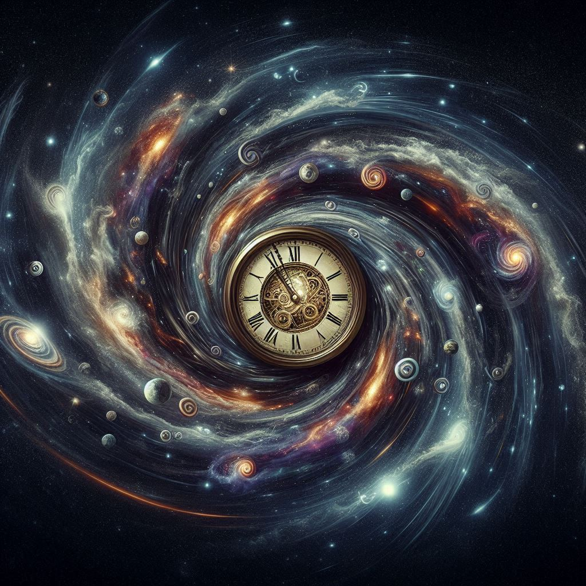

Time Travel
What is Time Travel?
Time travel refers to the concept of moving between different points in time, similar to how we move through space. It has been a popular subject in science fiction and theoretical physics, raising questions about the nature of time and reality.
Proposals and Theories
The concept of time travel has been proposed by numerous scientists and thinkers. Albert Einstein's theory of relativity suggests that time is relative and can be affected by speed and gravity. Various solutions to the equations of relativity have led to theoretical constructs like wormholes and time machines.
Is Time Travel Possible?
While time travel remains a theoretical concept, physicists have not ruled out the possibility. Some theories suggest that under specific conditions, such as traveling at light speed or through wormholes, time travel could be feasible. However, practical application remains elusive.
Recent Discoveries
Recent advancements in quantum physics and cosmology have provided new insights into the possibility of time travel. Experiments involving particles moving at relativistic speeds have hinted at the effects of time dilation, supporting some theoretical predictions of time travel.